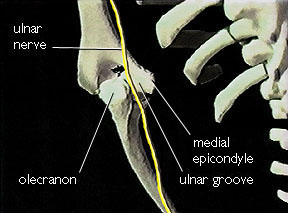

The Ulnar Nerve: Anatomy
Course in the Arm
The larger of the two terminal branches of the medial cord of the brachial plexus continues as the ulnar nerve, while the smaller terminal branch forms the medial root of the median nerve. In the axilla and upper arm the ulnar nerve runs inferior and medial to the axillary artery. It passes anterior to the triceps muscle and enters the ulnar groove between the medial epicondyle of the humerus and the olecranon.
Posterior to the medial epicondyle of the humerus,the ulnar nerve is superficial and easily palpable. Before entering the forearm the ulnar nerve sends articular branches to the elbow joint.
Course in the Forearm
In the proximal forearm the ulnar nerve passes between the two heads of the flexor carpi ulnaris. It descends deep to this muscle on the surface of the flexor digitorum profundis accompanied by the ulnar artery. It then passes medial to the artery and lateral to the flexor carpi ulnaris.
In the distal part of the forearm the ulnar nerve becomes relatively superficial, covered only by fascia and skin. Near the pisiform bone it passes superficial to the flexor retinaculum and ends by dividing into superficial and deep branches.

Branches
The branches of the ulnar nerve in the forearm include articular branches which pass to the elbow joint while the nerve is in the groove between the olecrenon and the medial epicondyle, muscular branches to the flexor carpi ulnaris and the medial half of the flexor digitorum profundus, a palmar cutaneous branch which arises near the middle of the forearm and supplies the skin on the medial part of the palm, and the dorsal cutaneous branch which arises in the distal half of the forearm and passes between the ulna and the flexor carpi ulnaris to supply the dorsal surface of the medial part of the hand. The ulnar nerve ends by dividing into a superficial and a deep branch. The superficial branch of the ulnar nerve supplies cutaneous fibers to the anterior surfaces of the medial one and one-half digits. The deep branch supplies motor fibers to the hypothenar muscles, the medial two lumbrical muscles, the adductor pollicis muscle, and all the interossei. The deep branch also supplies several joints (wrist, intercarpal, carpometacarpal, and intermetacarpal). The muscles innervated by the ulnar nerve are mainly concerned with fine movements of the hand.

Movements
adduction and abduction of the fingers (interossei)
adduction of the thumb (adductor pollicis)
flexion and adduction at the wrist (interossei)

HOME
 ULNAR NERVE BLOCK
ULNAR NERVE BLOCK